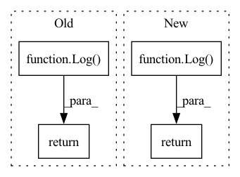

Pattern ID :22844

Before Change
self.buffer.reset()
return Log(
actor_loss=np.mean(actor_losses),
critic_loss=np.mean(critic_losses),
divergence=actor_log.divergence,
entropy=actor_log.entropy,
)
After Change
self.buffer.reset()
return Log(
actor_loss=actor_losses.mean(),
critic_loss=critic_losses.mean(),
divergence=divergences.sum(),
entropy=entropies.mean(),
)
In pattern: SUPERPATTERN
Frequency: 3
Non-data size: 4
Instances
Fragment ID: 72613559
Project Name: londonnode/pearl
Commit Name: 0d7fa4ab982a1fb9ea6734553d93aa5d65fd87ce
Time: 2021-12-20
Author: rohan.tangri@gmail.com
File Name: anvilrl/agents/a2c.py
M Class Name: A2C
N Class Name: A2C
M Method Name: _fit(4)
N Method Name: _fit(4)
M Parent Class: BaseDeepAgent
N Parent Class: BaseDeepAgent
M File Name: anvilrl/agents/a2c.py
N File Name: anvilrl/agents/a2c.py
M Start Line: 174
M End Line: 179
N Start Line: 138
N End Line: 183
'>
Before Change
)
self.buffer.reset()
return Log(divergence=log.divergence, entropy=log.entropy)
After Change
entropies[i] = log.entropy
self.buffer.reset()
return Log(divergence=divergences.mean(), entropy=entropies.mean())
'>
Fragment ID: 72613557
Project Name: londonnode/pearl
Commit Name: 90195a810a7780ac8982f85f2e47d5464164ac41
Time: 2021-12-20
Author: rohan.tangri@gmail.com
File Name: anvilrl/agents/ga.py
M Class Name: GA
N Class Name: GA
M Method Name: _fit(2)
N Method Name: _fit(1)
M Parent Class: BaseEvolutionAgent
N Parent Class: BaseEvolutionAgent
M File Name: anvilrl/agents/ga.py
N File Name: anvilrl/agents/ga.py
M Start Line: 86
M End Line: 103
N Start Line: 86
N End Line: 109
'>
Before Change
)
self.buffer.reset()
return Log(divergence=log.divergence, entropy=log.entropy)
After Change
entropies[i] = log.entropy
self.buffer.reset()
return Log(divergence=divergences.mean(), entropy=entropies.mean())
'>
Fragment ID: 72613561
Project Name: londonnode/pearl
Commit Name: 90195a810a7780ac8982f85f2e47d5464164ac41
Time: 2021-12-20
Author: rohan.tangri@gmail.com
File Name: anvilrl/agents/es.py
M Class Name: ES
N Class Name: ES
M Method Name: _fit(2)
N Method Name: _fit(1)
M Parent Class: BaseEvolutionAgent
N Parent Class: BaseEvolutionAgent
M File Name: anvilrl/agents/es.py
N File Name: anvilrl/agents/es.py
M Start Line: 69
M End Line: 85
N Start Line: 69
N End Line: 91